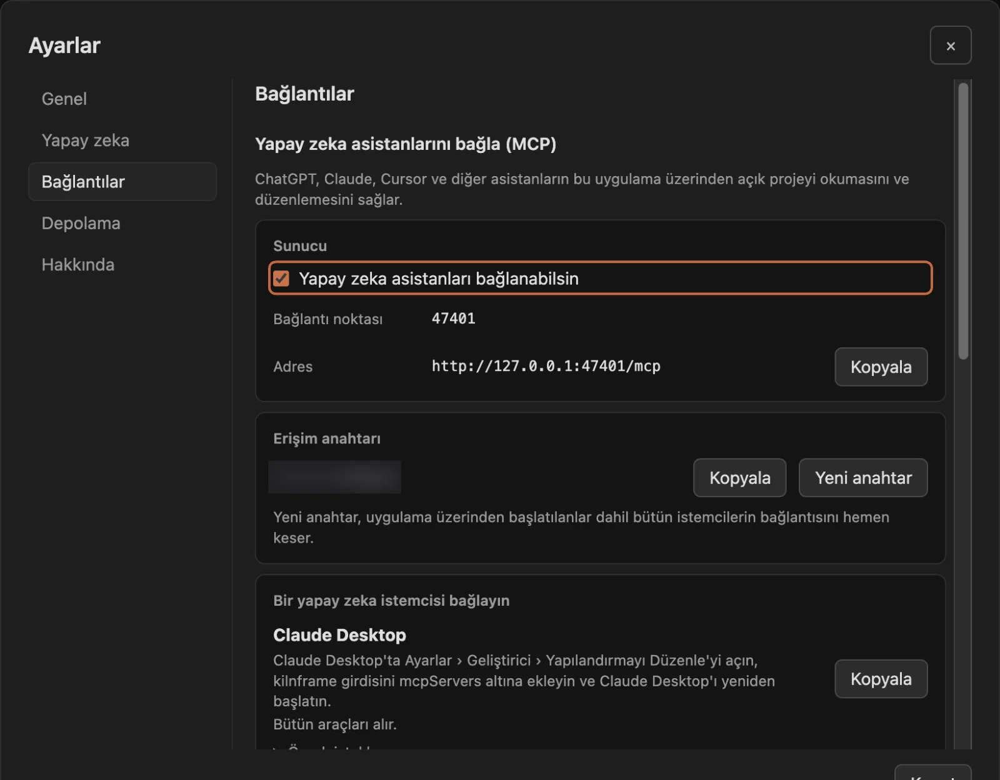
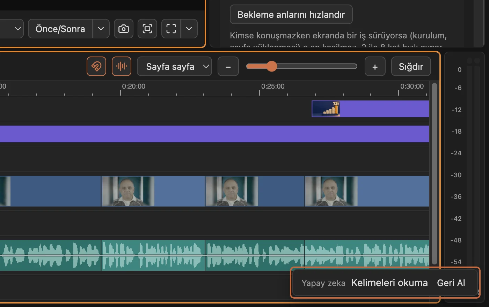

Yapay zeka asistanlarını bağla (MCP)
Kilnframe Desktop bir MCP sunucusu olabilir: Claude, ChatGPT, Codex ve Cursor gibi asistanlar açık projeyi okuyup gündelik sözlerle düzenleyebilir. Uygulamanın düğmeleriyle aynı denetlenmiş işlemleri kullanırlar; her düzenleme geri alınabilir.

Aç
- Bağlantılar'ı açAyarlar › Bağlantılar › Yapay zeka asistanlarını bağla (MCP).
- Açık mı bakYapay zeka asistanları bağlanabilsin ilk açılıştan beri açıktır. Altındaki satır Açık, … numaralı bağlantı noktasında dinliyor. der. Kapattıysan yeniden aç.
- Bir istemci bağlaBir yapay zeka istemcisi bağlayın altında seninkinin düğmesine bas. O istemcinin ihtiyacı olanı kopyalar; altındaki kart nereye yapıştıracağını söyler.
Mac'te, Windows'ta ve Linux'ta aynı şekilde çalışır. Node ya da başka bir şey kurman gerekmez.
Her istemci
- Claude Desktop: Claude Desktop'ta Ayarlar › Geliştirici › Yapılandırmayı Düzenle'yi aç, kopyalanan
kilnframegirdisinimcpServersaltına ekle ve Claude Desktop'ı yeniden başlat. - Claude Code (Terminal): kopyalanan komutu bir terminalde (Windows'ta PowerShell'de) çalıştır. Kilnframe her klasördeki Claude Code oturumunda görünür, Claude Desktop'taki Code sekmesi de dahil. Terminalde aç ve İlk istekle kopyala bir adım kazandırır.
- ChatGPT: ChatGPT masaüstü uygulamasında yerel bir MCP sunucusu ekle ve kopyalanan komutu yapıştır.
- Codex: kopyalanan satırları Codex'i başlatmadan önce bir terminalde çalıştır.
- Cursor: Ayarlar › MCP › Yeni sunucu ekle'yi aç ve kopyalanan girdiyi
mcpServersaltına ekle. - Diğer istemciler: adresi ve erişim anahtarını kopyala, bir HTTP MCP sunucusu olarak gir.
Claude Desktop, ChatGPT ve Codex, Kilnframe'le gelen ve bağlantı noktası değişse bile uygulamayı bulan küçük bir yardımcıyı başlatır. Mac'te ayarlarını kopyalamadan önce Kilnframe Desktop'ı Uygulamalar'a taşı. Web'deki ChatGPT desteklenmez: sunucu bilerek bilgisayarında kalır. Her istemcinin denemen için Örnek istekler'i de var.
Erişim anahtarı
Sunucu yalnızca bu bilgisayara cevap verir. Erişim anahtarı'na sahip her program açık projeyi düzenleyebilir; onu gizli tut. Yeni anahtar yenisini yapar ve bütün istemcilerin bağlantısını bir kerede keser; sonra komutları yeniden kopyala, Codex'i, ChatGPT'yi ve Claude Desktop'ı yeniden başlat. Paylaşılan bir bilgisayarda kullanmadığında sunucuyu kapat.
Alışılmış bağlantı noktası kullanımdaysa sunucu şimdilik başka birinde dinler ve bunu söyler: adresi yeniden kopyala.
Asistan neyi yapar, neyi yapamaz
Pencerede yapabildiğin hemen her şeyi. Ama bazı şeyler Kilnframe penceresinde seni bekler: ücretli yapay zeka anahtarını ya da aboneliğini harcayan işler, model indirme, güncelleme, hata bildirimi, ekran kaydı, bir bulanıklık için yüzü seçmek ve birinin sesine benzeyen bir ses. Proje dışındaki dosyalar pencerenin kendi Kaydet penceresinden kaydedilir; yeri sen seçersin.
Asistanın değiştirdikleri Yapay zekanın son yaptıkları'nda Geri Al ile ve Geçmiş'te adım olarak görünür.
